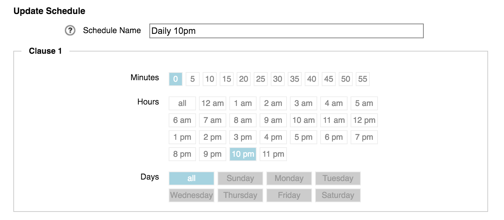

Cluster > Schedules
The Schedules page works with the Core Filer > Manage Cache Policies page to set up times when cache content is completely synchronized with the core filer.

Note
This configuration page was recently updated in Avere Control Panel. The information in this document is still a useful reference, but the screenshots and number of steps is slightly different for Avere OS version 4.6.2.5 and later. Updated documenatation is being created.
Schedules are used in cache policies to make sure that data is written to the core filer before a core filer backup, snapshot, or other operation. This is called scheduled write-through and it is described in more detail on the cache policies page.
To learn more about write-through scheduling and cache synchronization, read Synchronizing Cached Data with Scheduled Write-Through/Read Mode Periods.
If any schedules have already been created for your cluster, this page shows a list of existing schedules instead of the Create New Schedule panel.

Modifying a Schedule
To update an existing schedule, click it in the list. The Update Schedule panel is a populated version of the Create New Schedule panel; in either case, you can set the times and days you want by clicking the buttons to add or remove values.
Creating a Schedule
If no schedules are defined for the cluster, the Create New Schedule panel is automatically displayed when you load the Schedules page. If not, click Create New Schedule to open it.
Use the controls to configure the schedule.
Use the Schedule Name field to enter a descriptive name. This name is used to select the schedule on the Core Filer > Manage Cache Policies page. (Write-through scheduling is configured in the advanced section.)
In the section labeled Clause 1, click on the minute, hour, and day of the week values to specify when the operation will run. You can choose multiple values for each time division. (You must select at least one value for each division; none of them has a default value.)
For example, this clause would start a write-through mode every day at 10:00 p.m.
{kind=link}
If you need to configure additional start times, click Add Another Clause. You also can remove clauses by clicking the Remove This Clause link inside the border of the clause.

Remember to click the Create New Schedule button at the bottom of the page when finished.